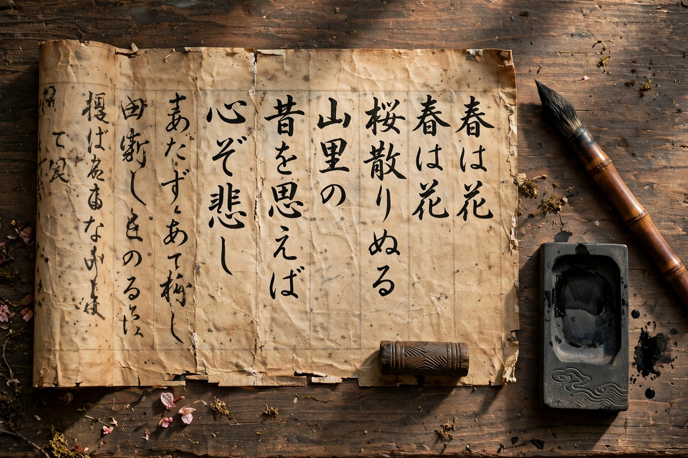

From Wikipedia, the free encyclopedia
| Kojiki | |
|---|---|
| Type | Chronicle / mythological record |
| Compiled | 712 CE, presented by Ō no Yasumaro |
| Commissioned by | Empress Genmei; project initiated under Emperor Tenmu |
| Language | Classical Chinese written with Japanese phonetic usage (man'yōgana precursors) |
| Contents | Three volumes: myths of the kami; chronicles of the emperors to Suiko |

The Kojiki (Japanese: 古事記, "Record of Ancient Matters"), presented to the Japanese court in 712 CE, is the oldest surviving book of Japan: a chronicle of the islands' creation by the kami Izanagi and Izanami, the deeds of Amaterasu, Susanoo and the earthly kami, and the line of emperors descending from the sun goddess down to Empress Suiko. Recited by the court memorizer Hieda no Are and written down by the official Ō no Yasumaro, it is at once scripture of Shinto, imperial genealogy, and the foundation document of Japanese literature — the source from which nearly all Japanese mythology is drawn.
The first volume, the Kamitsumaki ("Age of the Kami"), tells of the creation, the birth of the gods, Izanagi's descent to Yomi, Amaterasu's cave, Susanoo's serpent-slaying, the Izumo cycle of Ōkuninushi, and the descent of the heavenly grandchild Ninigi to rule the earth. The second and third volumes chronicle the emperors from the mythical Jimmu to the historical rulers of the 6th–7th centuries, threaded with songs — the Kojiki preserves some of Japan's oldest poetry. The text is written in Chinese characters used in a mixed system, partly for meaning, partly for Japanese sound, that makes it famously difficult and philologically precious.
Compiled at imperial command — Emperor Tenmu had ordered the correction of the court genealogies and tales, fearing their corruption — the Kojiki served to legitimate the imperial line as descendants of the sun goddess. It was eclipsed for centuries by the more Chinese-styled Nihon Shoki (720), then recovered by the Kokugaku (National Learning) scholar Motoori Norinaga, whose monumental commentary Kojiki-den (completed 1798) made it the centre of Shinto revival and of Japanese self-understanding. Modern translations (Chamberlain 1882; Philippi 1968; Ōno et al. in progress) continue the work of unfolding a text that is less a history than a nation's charter myth.
Shinto · Izanagi · Amaterasu · Susanoo · Japanese mythology